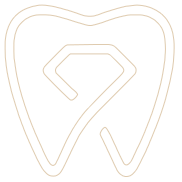
Buzëqeshja juaj, në duar të kujdesshme.
Kujdes dentar personal, i shpjeguar qartë dhe i planifikuar sipas jush. Shikoni oraret reale të lira dhe rezervoni online për pak minuta.
- Vendndodhja
- Rruga Ibrahim Pacolli, Gjilan
- Orari i punës
- E hënë – E premte · 09:00–18:00Pauza 12:00–13:00Shiko orarin e plotë
- Kontakti
- +383 45 105 000
- Rezervim online
- Rezervoni në çdo kohë, ditë e natë
Trajtimet
Nga kontrollet e rregullta te trajtimet restauruese dhe estetike. Çdo faqe trajtimi shpjegon çfarë të prisni, që të rezervoni me siguri.
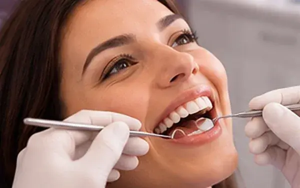
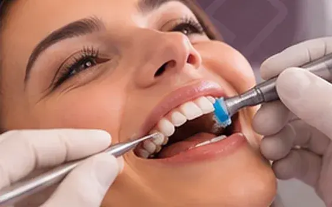
Pastrim profesional
45 minHeqja e pllakës dhe gurëzave që furçimi i përditshëm nuk i arrin.
Më shumëRezervo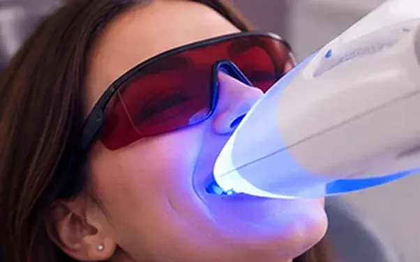
Zbardhimi i dhëmbëve
60 minZbardhimi i ngjyrës natyrale të dhëmbëve nën mbikëqyrje profesionale.
Më shumëRezervo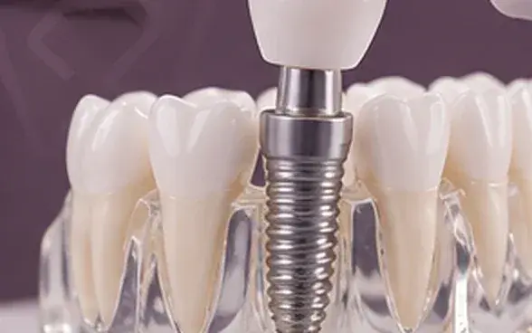
Implantet dentare
60 minNjë zgjidhje afatgjatë për zëvendësimin e një ose më shumë dhëmbëve që mungojnë.
Më shumëRezervo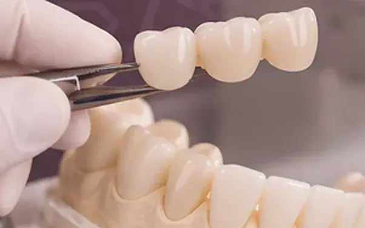
Kurora dhe ura
60 minRestaurimi i dhëmbëve të dëmtuar dhe mbushja e hapësirave me restaurime fikse.
Më shumëRezervo
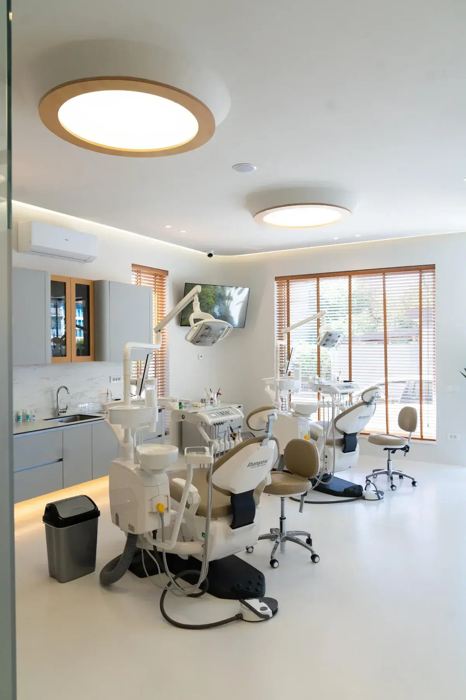
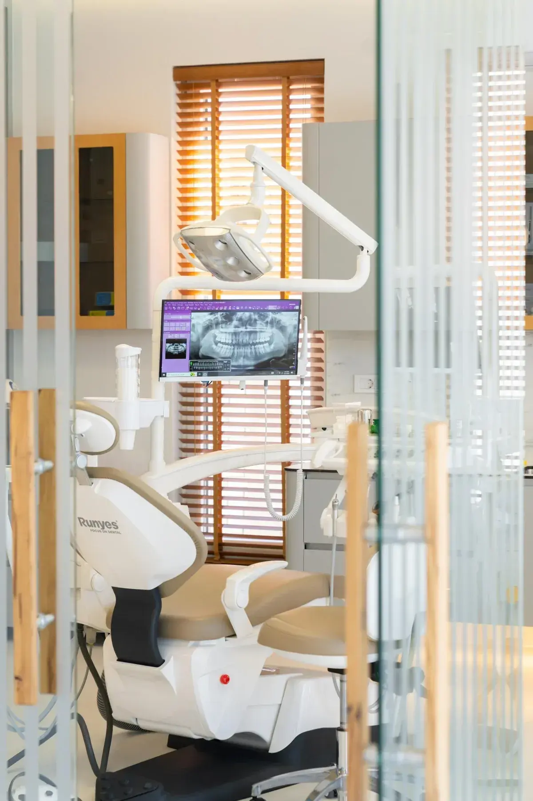
Një studio dentare e ndërtuar rreth personit në karrige
GemDental Care bashkon stomatologjinë e kujdesshme me një mënyrë pune të qetë dhe personale.
Marrim kohë t'ju shpjegojmë çfarë shohim, çfarë rekomandojmë dhe pse, që çdo vendim për buzëqeshjen tuaj ta merrni me siguri.
Më shumë për GemDentalPacientë të vërtetë të GemDental
Buzëqeshje të vërteta, të transformuara këtu
Çdo fotografi është e një pacienti të GemDental, e publikuar me pëlqimin e tij. Tërhiqni ndarësin për të krahasuar para dhe pas.
Sërish buzëqeshje e plotë pas dhëmbëve që mungonin
Dhëmbë që mungojnë
Fotografitë publikohen me pëlqimin me shkrim të çdo pacienti. Rezultatet ndryshojnë nga personi te personi.
Si ndihet një vizitë
Qasje personale
Plani i trajtimit përshtatet sipas nevojave, përparësive dhe ritmit tuaj.
Komunikim i qartë
Mundësitë, hapat dhe kostot shpjegohen me fjalë të thjeshta para se të vendosni.
Kujdes i menduar
Vëmendje ndaj detajeve të vogla që e bëjnë vizitën më të lehtë, nga rezervimi te kujdesi pas trajtimit.
Kohë për t'u qetësuar
Hapësirë për pyetjet tuaja, që të mos ndiheni kurrë me nxitim gjatë terminit.
Brenda klinikës
Një hapësirë e qetë dhe moderne në Gjilan
Hidhini një sy klinikës para vizitës: recepsioni, salla e trajtimit dhe radiografia jonë digjitale.
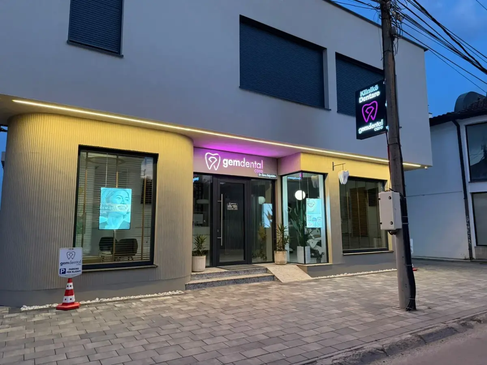
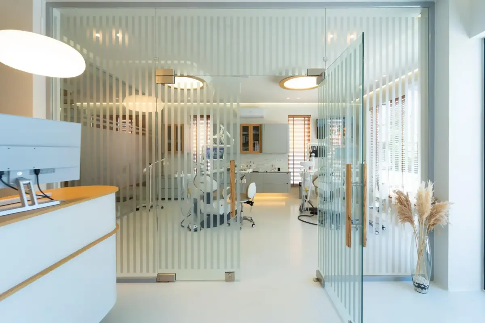
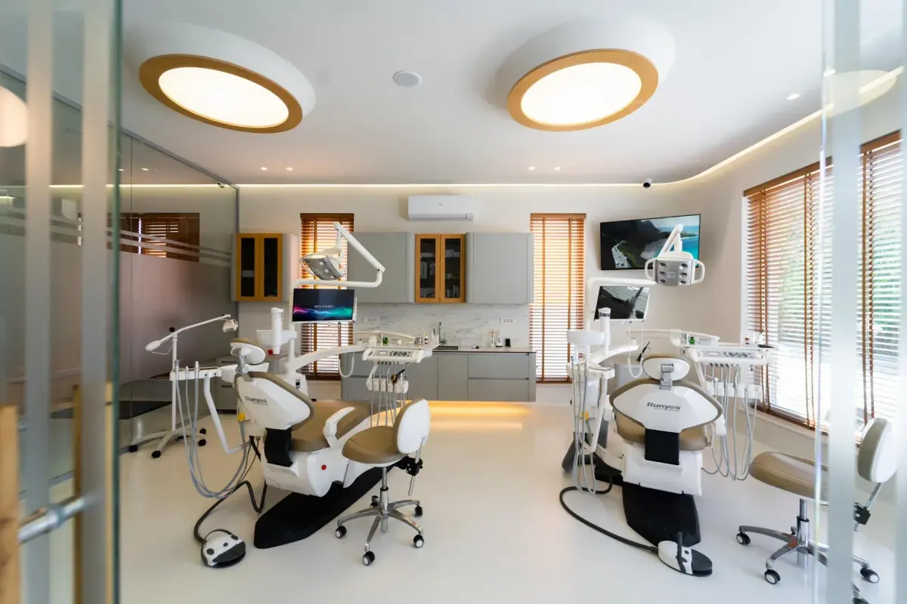
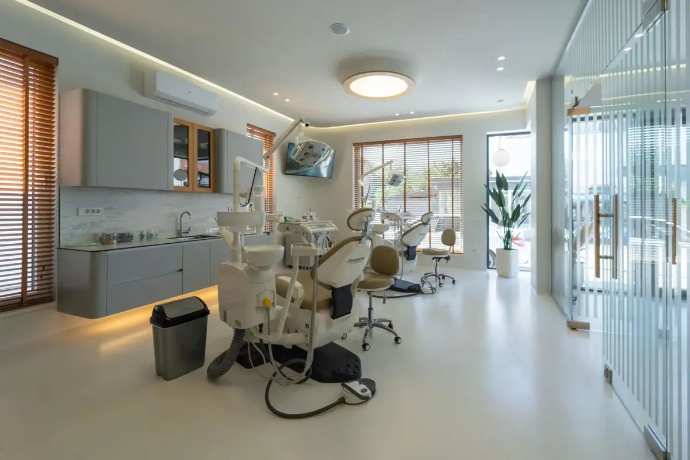
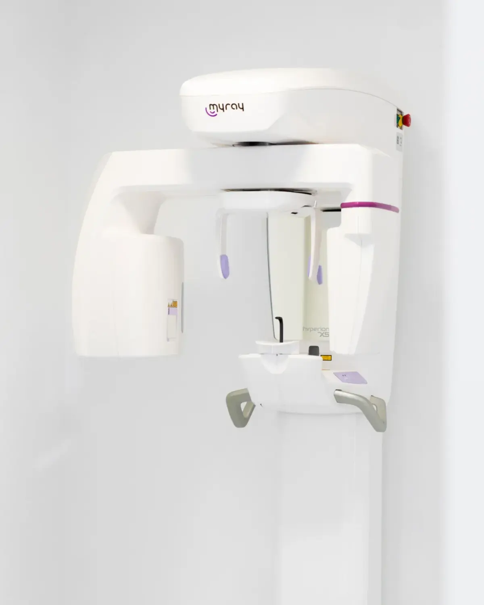
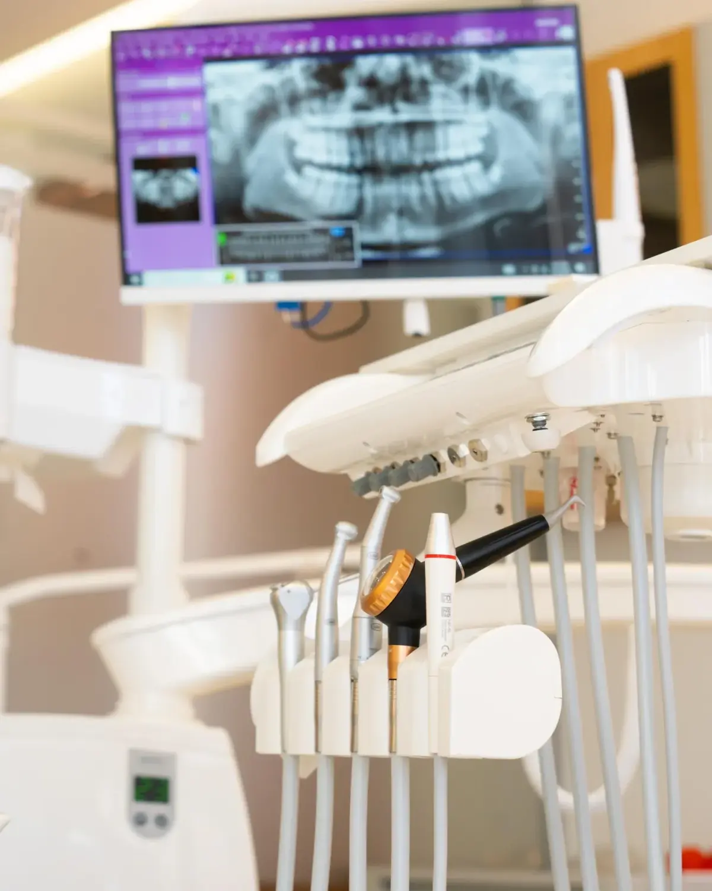
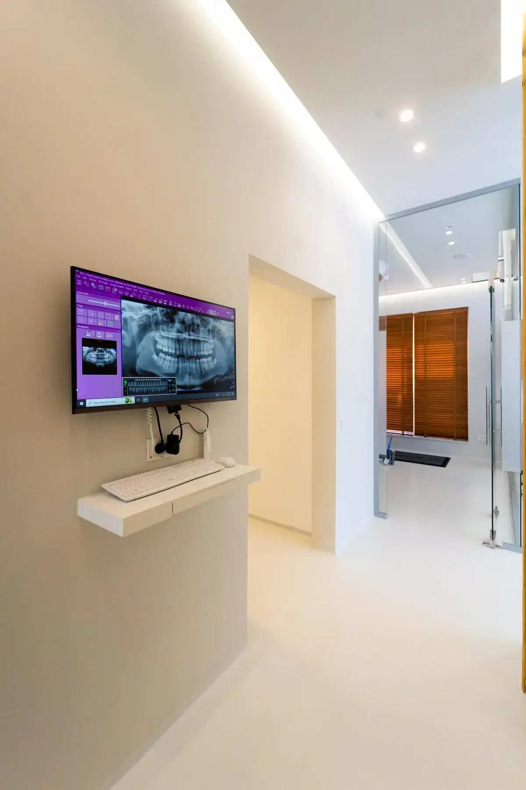
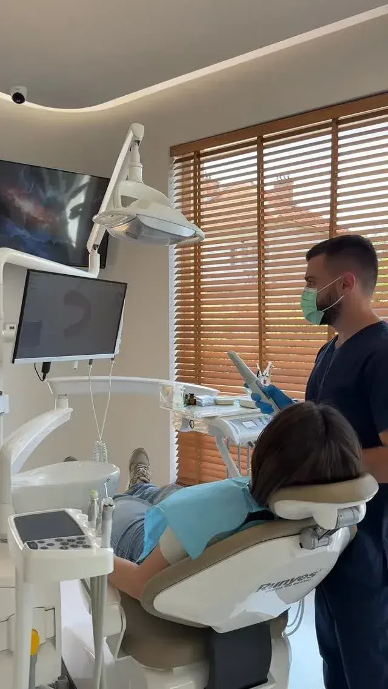
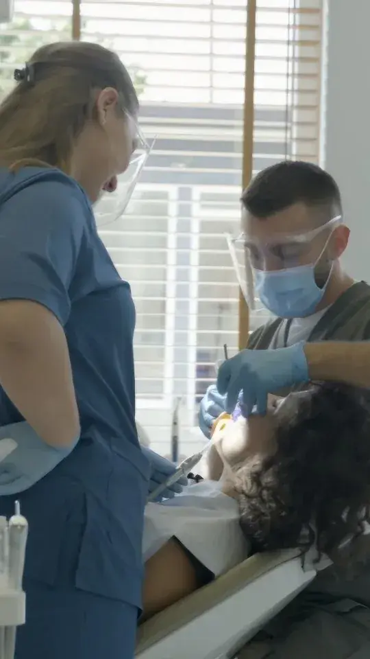
01 / 09Hyrja jonë në Rrugën Ibrahim Pacolli, Gjilan
Dentisti juaj
Dr. Genc Bejtullahu
Një profil i plotë me arsimimin dhe përvojën do të publikohet së shpejti këtu.
Lexo profilinNga rezervimi te vizita juaj
Pesë hapa të thjeshtë, të gjithë online.
01
Zgjidhni trajtimin
Zgjidhni një trajtim, ose një konsultë nëse nuk jeni të sigurt.
02
Gjeni një orar të lirë
Shfaqen vetëm oraret reale të lira, të përditësuara sapo rezervojnë të tjerët.
03
Shkruani të dhënat tuaja
Emri, telefoni dhe emaili. Nuk nevojitet historia mjekësore online.
04
Merrni konfirmimin
Do të shihni qartë nëse vizita është konfirmuar apo pret miratimin.
05
Vizitoni GemDental
Ejani disa minuta më herët dhe ne kujdesemi për pjesën tjetër.
Zgjidhni trajtimin, një ditë dhe një orë që shfaqet e lirë dhe shkruani të dhënat tuaja të kontaktit. I gjithë procesi zgjat disa minuta dhe në fund merrni një numër reference.
Rezervoni një konsultë. Është zgjedhja e duhur sa herë që nuk jeni të sigurt: dentisti do t'ju kontrollojë dhe do t'ju shpjegojë mundësitë para çdo hapi tjetër.
Hapi i fundit i rezervimit ju tregon qartë nëse termini juaj është konfirmuar apo nëse është një kërkesë që pret miratimin e klinikës. Nëse është kërkesë, do të merrni një mesazh të veçantë sapo të konfirmohet.
Buzëqeshje nga klinika jonë
Buzëqeshja juaj e radhës fillon këtu.
Zgjidhni një trajtim dhe një orar që ju përshtatet. Zgjat vetëm pak minuta.